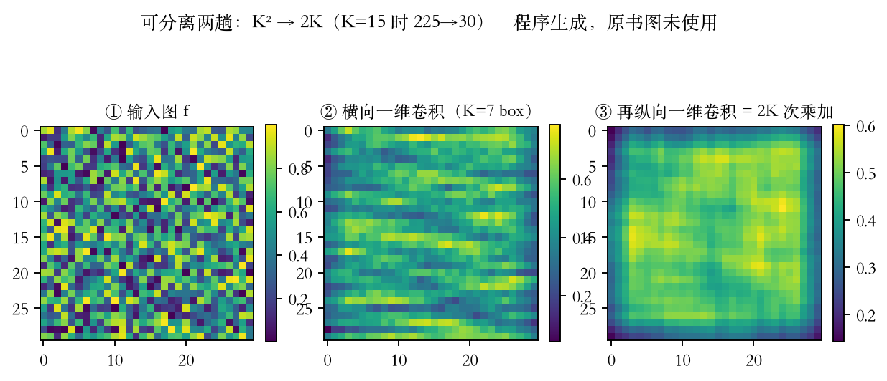
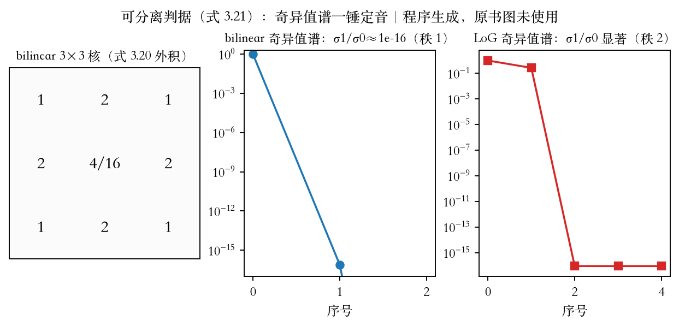
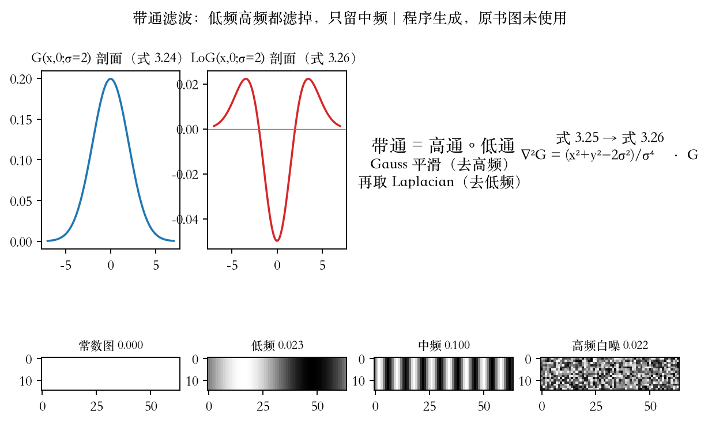
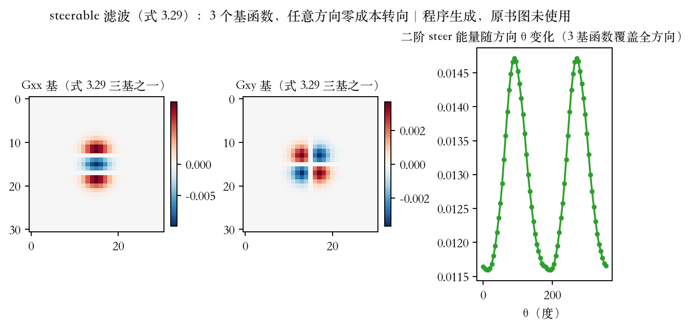
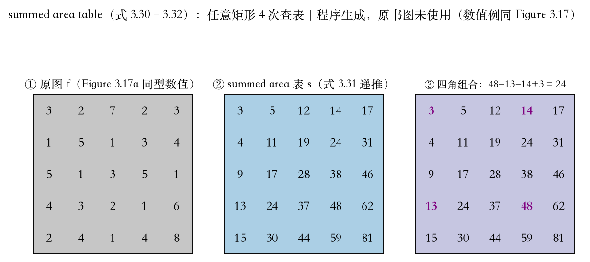
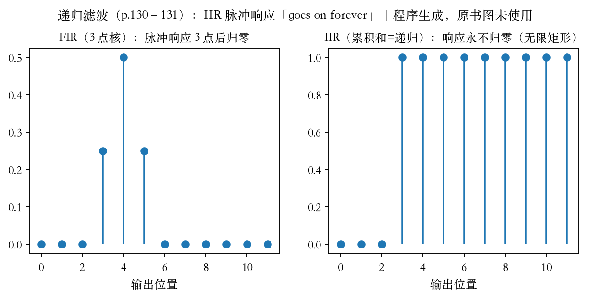

第 3 章 · 可分离滤波
可分离性：四个加速话题
上集留下三个名字：可分离、带通、积分图。
第七集预告过：核大一圈，计算按平方涨。
本集把可分离、带通、积分图、递归算清。
常用核例子上集讲过，本节从效率讲起。
依据：原书第 124–131 页
四笔账
可分离：K² 降到 2K
判据：SVD 秩一
带通：先平滑再求导
积分图：四角查表
正课第十六集
01 / 9
第 3 章 · 效率账
先算账：K 平方与 2K
卷积每像素 K² 次乘加，K=15 是 225 次。
拆成横竖两趟，合计 2K，也就是 30 次。
能这样拆的核，叫可分离核。
两趟与直接卷积内部一致，只差浮点尾数。
依据：原书第 124 页；本集实验

可分离两趟：K² 到 2K（K=15 时 225 到 30）｜程序生成，未用教材或论文原图
正课第十六集
02 / 9
第 3 章 · 可分离判据
能不能拆：看奇异值谱
把二维核当矩阵，做奇异值分解。
只有第一个奇异值非零，核就可分离。
开平方乘主方向，得到一对竖核横核。
bilinear 次奇异值约 1e-16，纯秩一。
依据：原书第 124–125 页；本集实验

bilinear 秩一与 LoG 秩二的奇异值谱对照｜程序生成，未用教材或论文原图
正课第十六集
03 / 9
第 3 章 · 级数近似
不够秩一：取级数前几项
LoG 可写成两个可分离滤波器之和。
两项就能精确重建，成本 225 降到 60。
值不值得，看 K 和显著奇异值个数。
还要看缓存一致性与内存局部性。
依据：原书第 125 页；本集实验
LoG = G₁″ ⊗ G₁ + G₁ ⊗ G₁″
两个可分离核之和；K=15 时直接卷积 225 次，两对一维核合计 4K=60 次
正课第十六集
04 / 9
第 3 章 · 带通滤波
带通：两头都滤，只留中频
上一集的模糊核都是低通，留低频压高频。
书上第 127 页把 Sobel 与角点归为带通。
配方：先单位面积高斯平滑，再求导。
常数 0.000，低频 0.023，中频 0.100，高频 0.022。
依据：原书第 127 页；本集实验

G 与 LoG 剖面，四张合成图的 LoG 响应｜程序生成，未用教材或论文原图
正课第十六集
05 / 9
第 3 章 · 转向滤波
steerable：三个基管全向
高斯平滑后取二阶导，就是拉普拉斯。
先平滑再拉普拉斯，等价于卷 LoG。
方向核等于 u 乘 Gx 加 v 乘 Gy。
二阶三基：u²Gxx、2uvGxy、v²Gyy。
依据：原书第 127–128 页；本集实验

Gxx、Gxy 基与二阶 steer 能量随方向变化｜程序生成，未用教材或论文原图
正课第十六集
06 / 9
第 3 章 · 积分图
积分图：任意矩形四角查表
图上要反复用不同大小的方块核。
积分图存原点到每点的累计和。
每像素查三格、加减三次，一遍扫完。
任意矩形只要四个角，式 3.32。
依据：原书第 129–130 页；本集实验

5×5 数值例：递推表与四角组合 48−13−14+3=24｜程序生成，未用教材或论文原图
正课第十六集
07 / 9
第 3 章 · 递归滤波
递归滤波：IIR 与 FIR
累积图多花 logM+logN 个位。
8 位 1920×1080 最大约 5.3 亿，int32 装得下。
式 3.31 是递归滤波，输出依赖前值。
信号处理里叫 IIR，冲激响应永不归零。
依据：原书第 130–131 页；本集实验

FIR 三点后归零；IIR 累积和一直延伸到末尾｜程序生成，未用教材或论文原图
正课第十六集
08 / 9
第 3 章 · 小结与移交
小结：快、准、大范围
可分离：K² 降到 2K，判据是 SVD 秩一。
带通先平滑再求导，steerable 三基。
作业 3.10 两趟一维，3.13 转向滤波。
下集：非线性滤波，双边也会失手。
依据：原书第 124–131 页；习题第 182–183 页
四笔账
可分离：K²→2K
带通：先平滑再求导
steerable：二阶三基
积分图：四角查表
正课第十六集
09 / 9